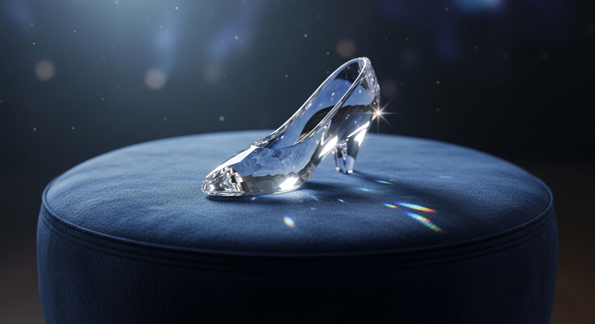

Outfit of the Night
A touch of magic before the clock strikes twelve...

Fairy Godmother truly outdid herself this evening. The bespoke spun-glass heels are the absolute centerpiece of tonight's ensemble.
They catch the moonlight beautifully, reflecting a thousand silver stars with every step I take across the ballroom floor. Incredibly delicate in appearance, yet surprisingly comfortable for dancing waltzes.
Perfectly tailored fit—so perfect, in fact, I can't imagine them fitting anyone else. Just hoping they hold up well past midnight!